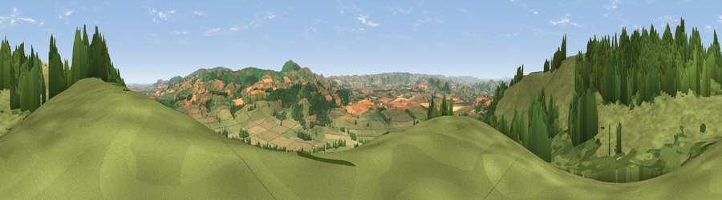

Viewpoint near Marton
#8283 in England · top 27% of its area beats it · near MartonThe view, rendered

A 360° render of this exact spot computed from the terrain model, tree cover and land cover — summer colours, afternoon light, calibrated against photographs of famous viewpoints. Real trees, hedges and buildings will differ in detail.
The panorama
Grey silhouette: terrain skyline in each direction (720 bearings, Earth curvature and refraction included). Dashed green: skyline with trees (+15 m) and buildings (+8 m) as obstacles. Blue strip: how far the ground is visible on each bearing.
Where the view opens
Wedge length = distance to the farthest visible ground on that bearing (vegetation-aware). Rings at 10, 25 and 50 km.
What fills the view
68% grassland · 24% woodland · 8% cropland
Angular shares of the visible panorama (visual magnitude), not map area. Landscape diversity 0.36 (0–1 Shannon).
Key numbers
More beautiful places nearby
The staircase of upgrades: each row has a higher view potential than everything closer. Driving times are estimates from straight-line distance, calibrated against real road routing — check an actual route before setting out.
| Place | Direction | Drive | Score |
|---|---|---|---|
| Viewpoint near Marton | N · 3 km | ~7 min | 71.9 |
| Stapeley Hill | ESE · 6 km | ~12 min | 74.9 |
| Bromlow Callow | E · 6 km | ~12 min | 76.8 |
| Viewpoint near Vennington | NNE · 9 km | ~17 min | 80.8 |
| Viewpoint near Stiperstones | E · 11 km | ~21 min | 82.0 |
| Viewpoint near Halfway House | NNE · 12 km | ~22 min | 83.3 |
| The Lawley | ESE · 23 km | ~38 min | 85.8 |
| Viewpoint near Little Wenlock | E · 36 km | ~55 min | 86.6 |
52.61385, -3.08309 · source: screening · position refined by local search. Computed location — check access rights before visiting.